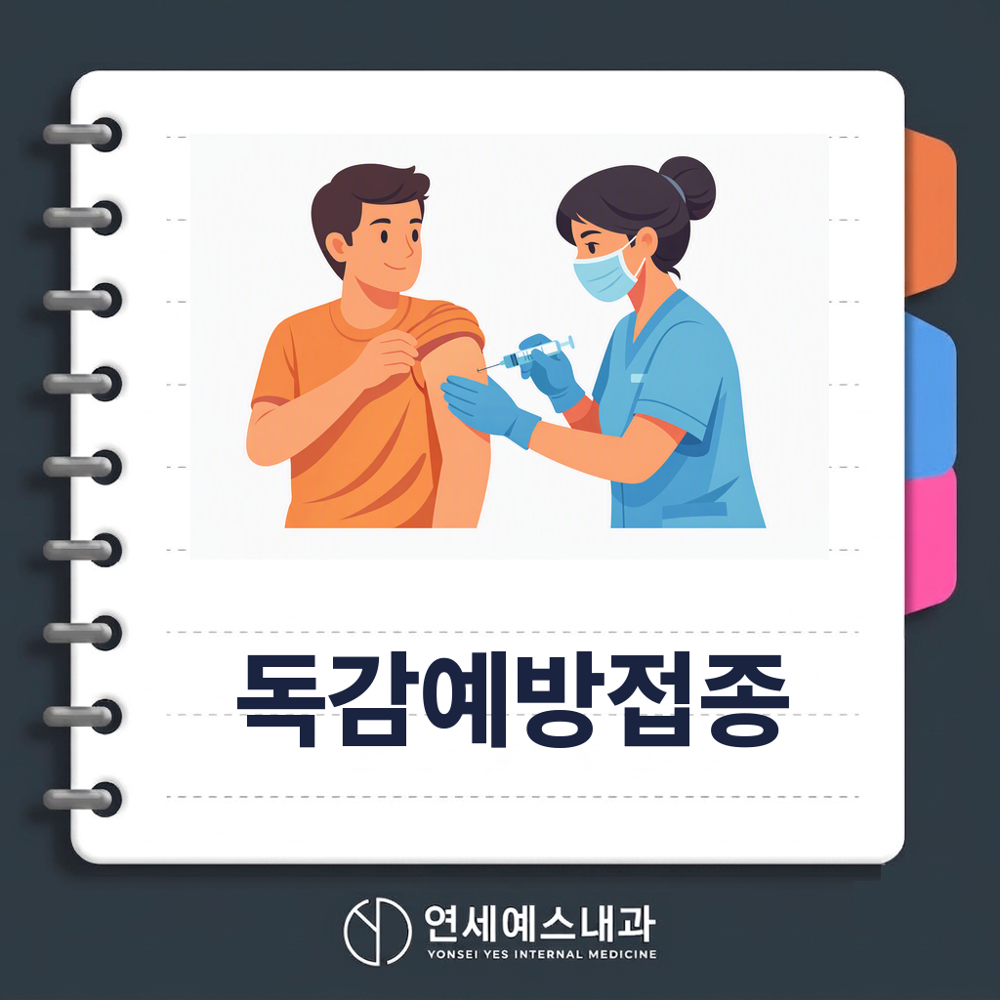
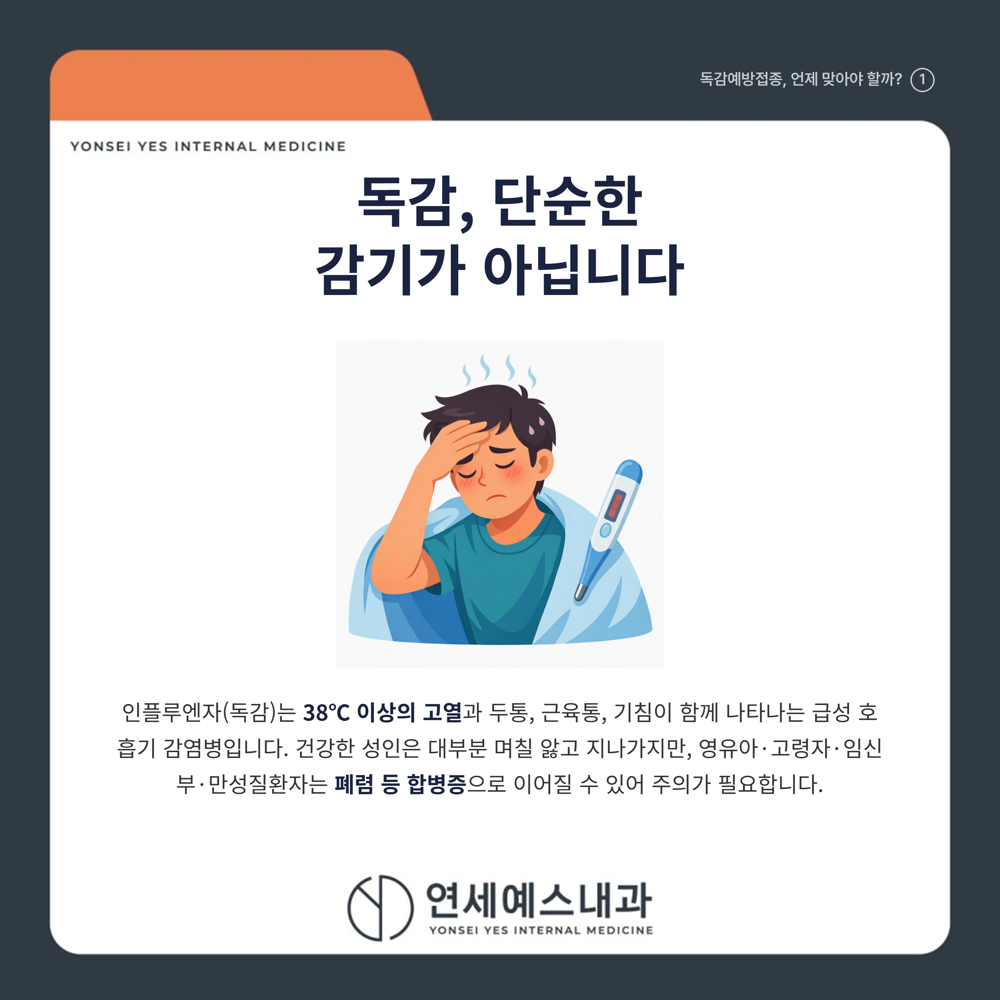
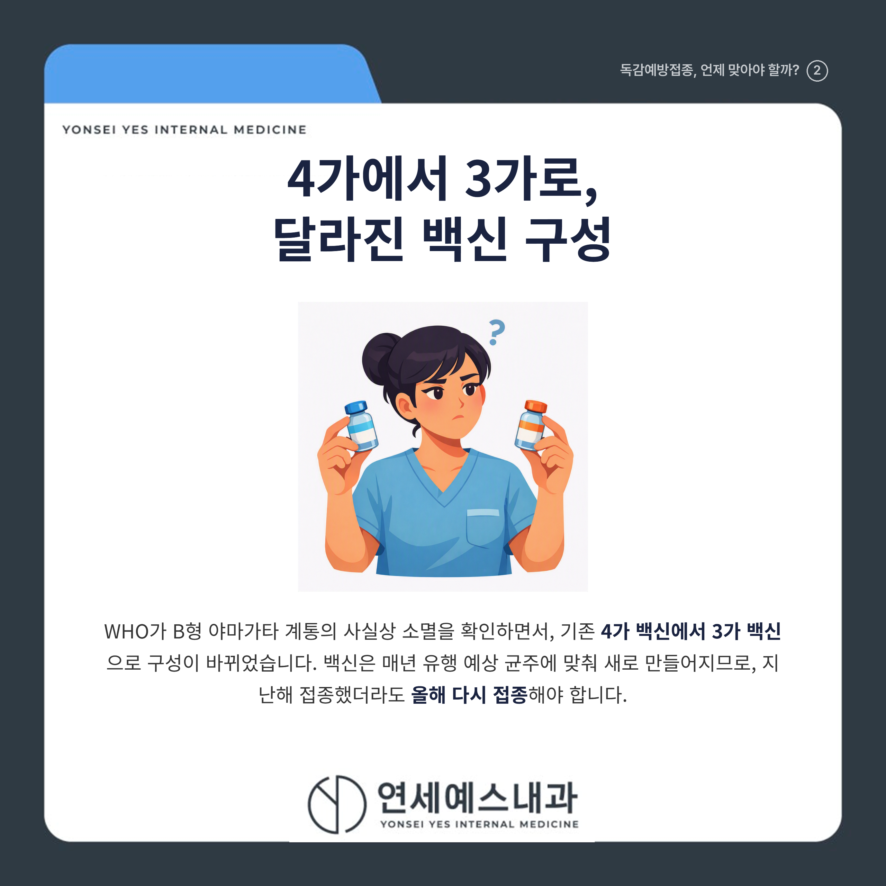
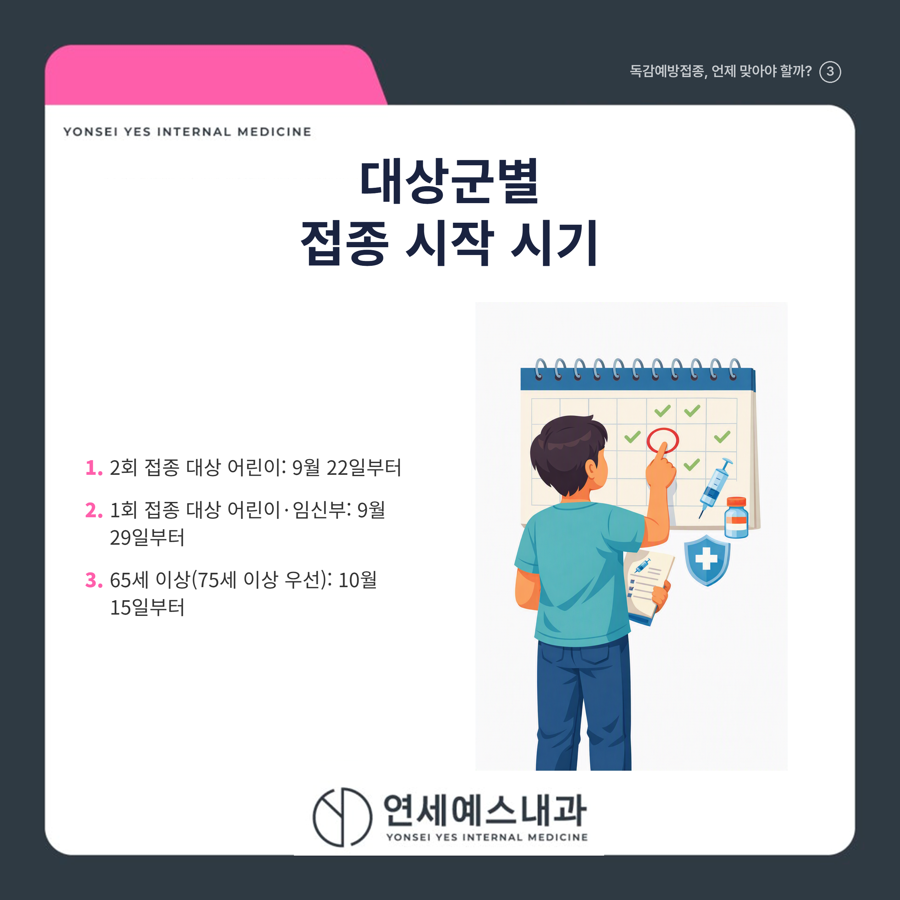
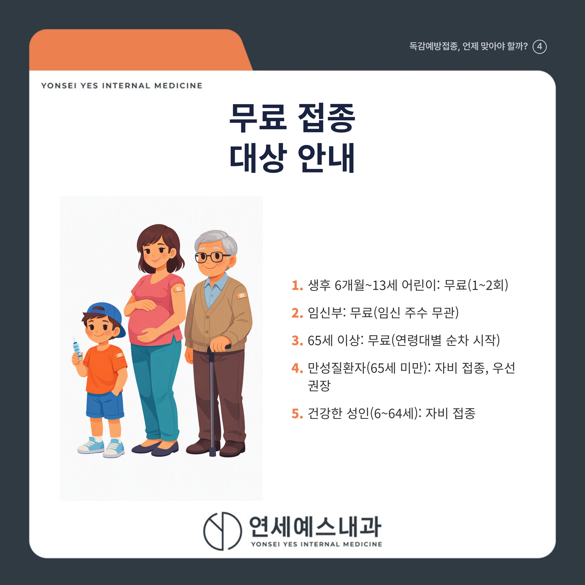
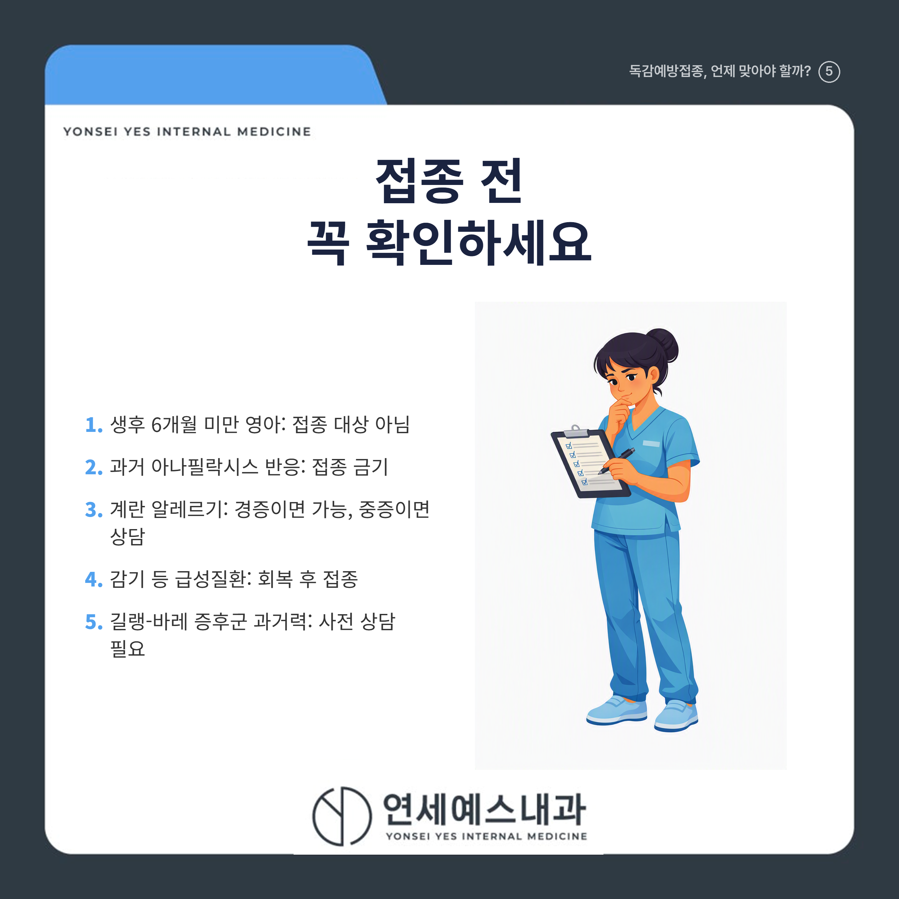
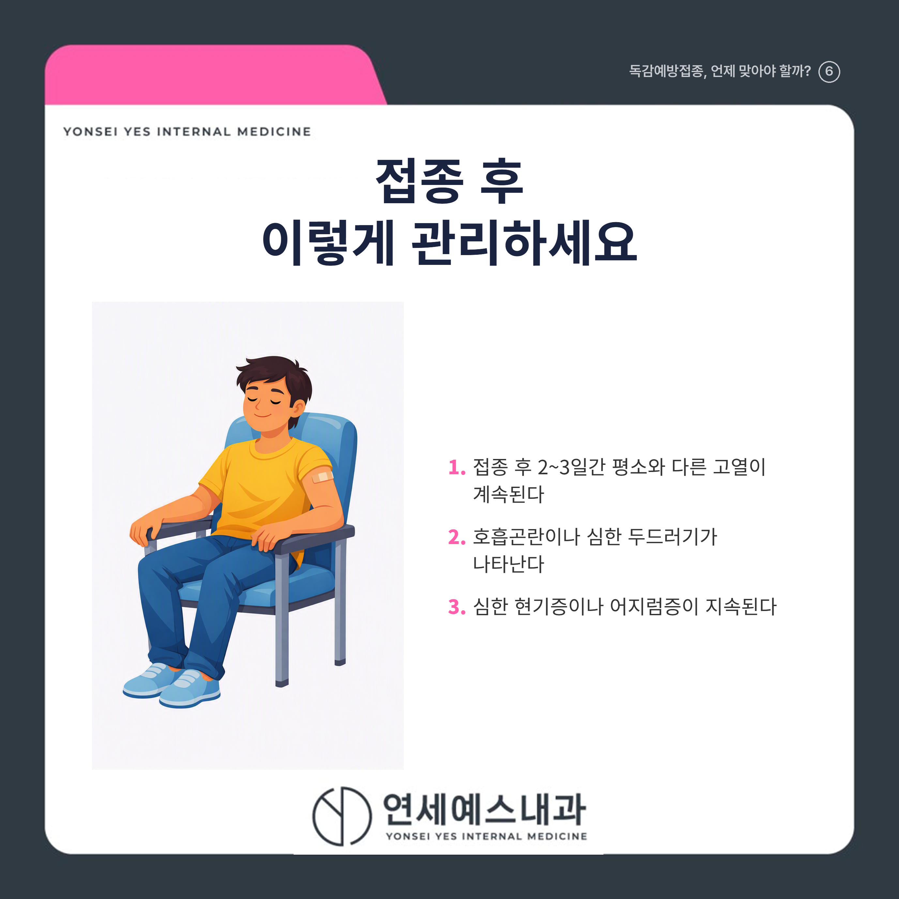
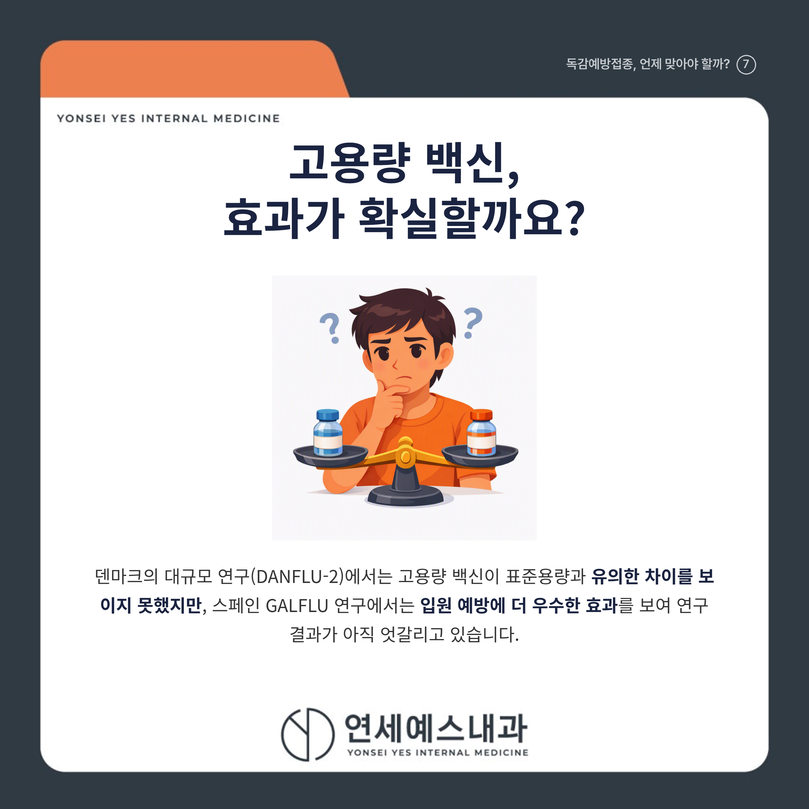
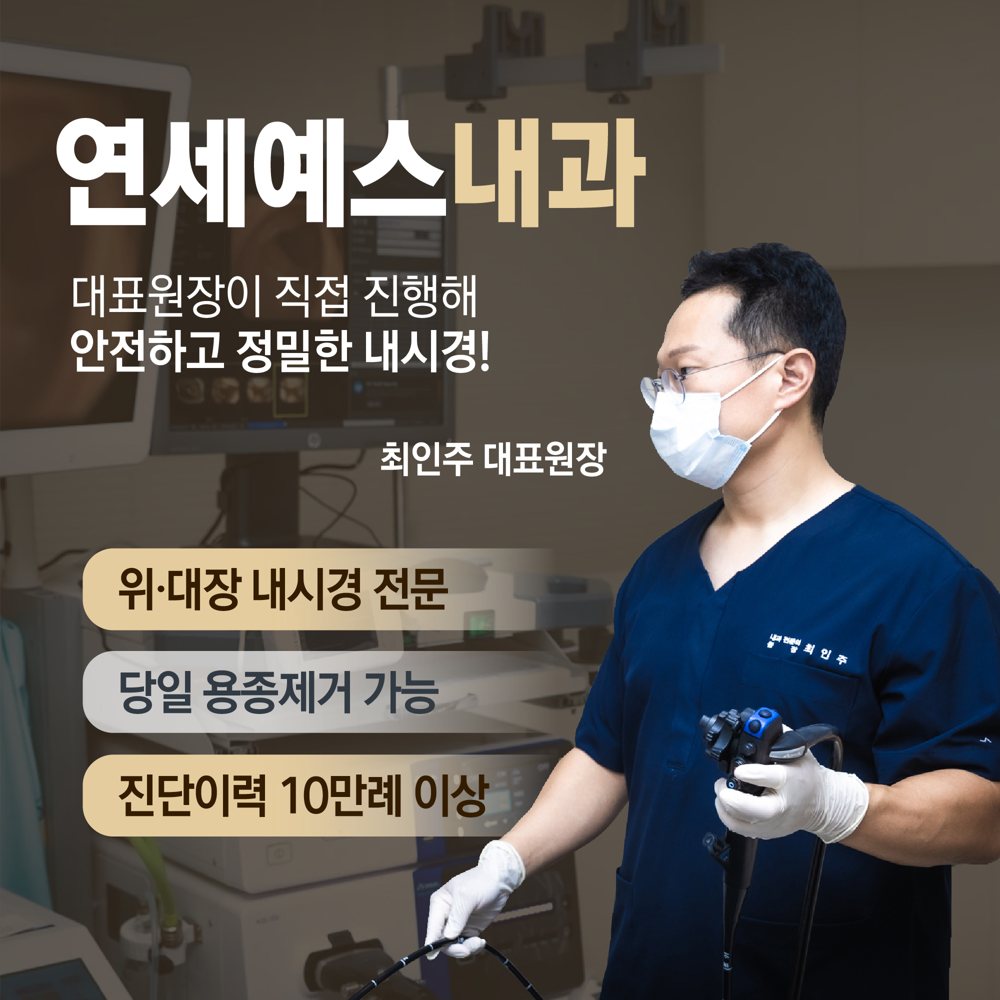

[주안동혈액검사내과연세예스내과]독감예방접종 시기와 대상, 언제 맞아야 할까?

안녕하세요! 여러분의 건강 주치의 연세예스내과입니다. 😊
선선한 바람이 부는 걸 보니 가을이 왔네요. 환절기엔 독감예방접종이 떠오르시죠?
"작년에 맞았으니 올해는 패스" 하셨다면, 인플루엔자는 매년 균주가 달라져 새로 접종해야 합니다.
오늘은 독감예방접종 시기와 대상을 정리해 드릴게요.
1. 🍂 독감, 단순한 감기가 아닙니다

인플루엔자는 38℃ 이상의 고열, 두통, 근육통, 기침이 함께 오는 급성 호흡기 질환입니다.
영유아·고령자·임신부·만성질환자는 폐렴 등 합병증 위험이 있어 방심은 금물입니다.
2. 💊 이번 절기, 백신 구성이 달라졌습니다

기존 4가 백신에서, WHO 권고에 따라 2025-2026절기부터 3가 백신으로 국가예방접종 구성이 바뀌었습니다.
백신은 매년 새로 만들어지므로, 작년 접종 여부와 관계없이 올해도 다시 맞아야 합니다.
3. 📅 접종은 언제가 좋을까요?

대상군별로 9월 말~10월 중순 순차적으로 시작되며, 항체 형성엔 약 2주가 걸립니다.
유행 전인 9~10월 접종이 권장되지만, 시기를 놓쳤어도 유행 중이라면 접종은 여전히 의미가 있습니다.
4. 📋 무료 접종 대상, 나도 해당될까요?

| 대상 | 지원 여부 |
|---|---|
| 생후 6개월~13세 | 무료 |
| 임신부 | 무료 |
| 65세 이상 | 무료 |
| 만성질환자·건강한 성인 | 자비 |
전국 위탁의료기관과 보건소 어디서든 접종할 수 있습니다.
Q. 만성질환자는 꼭 맞아야 하나요?
네, 꼭 맞으시는 것이 좋습니다. 만성질환자는 독감 감염 시 입원 위험이 약 6배, 뇌졸중 위험은 약 3배 높아집니다.
그런데도 만성질환자의 약 49%는 자신이 고위험군인지 모르고 있었습니다. 해당하신다면 우선 접종 대상입니다.

생후 6개월 미만 영아, 과거 아나필락시스 반응 병력이 있다면 접종 금기입니다. 급성질환·길랭-바레 증후군 과거력이 있다면 접종 전 의료진과 상담하세요.
5. 🩹 접종 후 이렇게 관리하세요

접종 부위 통증은 15~20%, 발열 등 전신 반응은 약 1%에서 나타나며 대부분 48시간 이내 사라집니다.
20~30분은 접종 기관에 머물고, 당일은 과음·과격한 운동을 피하세요.
[ ] 2~3일간 고열이 계속된다
[ ] 호흡곤란이나 심한 두드러기가 나타난다
[ ] 심한 현기증이 지속된다
해당한다면 즉시 가까운 내과를 방문해 진료받으시기 바랍니다.
6. 🔍 고령자 고용량 백신, 효과가 확실할까요?

해외 연구 결과는 아직 엇갈립니다. 국내 국가예방접종은 고용량이 아닌 일반 백신을 쓰므로 참고 수준으로만 알아두세요.
"올해도 괜찮겠지가 아니라, 올해도 새로 맞아야 한다는 것을 잊지 마세요."
만성질환이 있거나 고위험군에 해당한다면, 가까운 내과에서 상담받아 보시기 바랍니다.
※ 모든 치료 및 예방접종은 개인의 상태에 따라 발열, 통증, 알레르기 반응 등의 부작용이 나타날 수 있으므로, 반드시 의료진과 충분한 상담 후 진행하시기 바랍니다.
연세예스내과에서 전해드리는 건강 정보였습니다. 오늘도 건강하고 평안한 하루 보내세요!



#독감예방접종 #인플루엔자백신 #가을철건강 #주안사거리내과 #주안사거리의원 #주안사거리내과의원 #미추홀내과 #미추홀의원 #미추홀내과의원 #옛시민회관내과